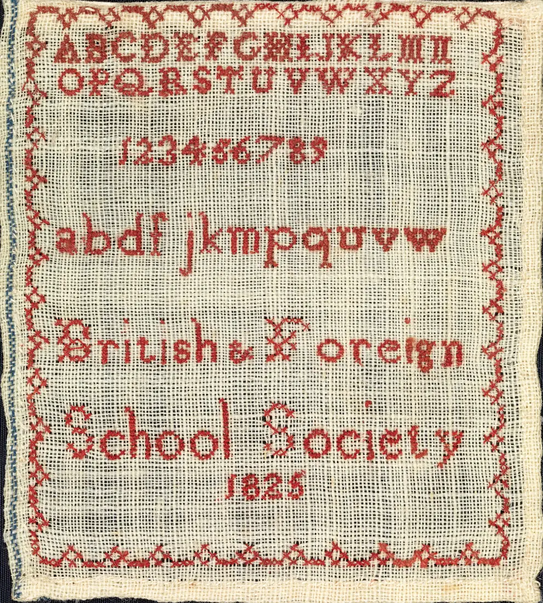

화면의 글자
같은 글을 휴대폰과 회사의 오래된 모니터에서 번갈아 열어 보면, 휴대폰의 글자는 종이처럼 또렷한데 모니터의 글자는 가장자리가 보풀처럼 일어나 있다. 서점 소식 페이지를 처음 여는 순간 몇 초 동안 글자 없이 빈 상자만 보이다가 갑자기 글이 나타나는 일도 있다. 종이에서는 없던 일이다. 화면의 글자는 잉크가 아니라 네모난 빛의 점 위에 있고, 그 글자를 그릴 글꼴은 인쇄소 서랍이 아니라 통신망을 타고 온다. 이 장은 그 두 가지 사실이 타이포그래피에 무엇을 요구하는지 본다.
- 글자의 윤곽이 픽셀 격자 위에 칠해지는 과정(래스터화)과 흑백·회색·서브픽셀 렌더링의 차이를 설명한다.
- 힌팅이 작은 글자의 획을 격자에 맞추는 대신 무엇을 희생하는지, 고해상도 화면에서 왜 덜 중요해졌는지 안다.
- 한글 웹폰트가 무거운 까닭을 글자 수로 설명하고, 조각 나누기(unicode-range)와 서브셋으로 전송량을 줄이는 법을 실제 측정값으로 본다.
- 글꼴이 늦게 올 때 브라우저가 하는 일(FOIT·FOUT)과 font-display의 네 가지 값을 구별한다.
- 가변 글꼴의 축과 보간을 이해하고, rem과 clamp()로 사용자 설정을 존중하는 반응형 글자 크기를 짠다.
픽셀 위의 글자
디지털 글꼴은 글자를 점이 아니라 선으로 저장한다. 글자 하나는 직선과 곡선(베지에 곡선)으로 이은 윤곽선, 곧 아웃라인(Outline)이다. 윤곽선에는 크기가 없어서 8포인트로도 8미터로도 똑같이 매끈하게 늘어난다. 그런데 화면은 가로세로로 줄 맞춰 놓인 네모난 빛의 점, 픽셀(Pixel)로만 그림을 보여 줄 수 있다. 윤곽선을 픽셀의 밝기로 바꾸는 일을 래스터화(Rasterization)라고 한다. 매끈한 선을 모눈종이에 옮겨 칠하는 일이다.
글자가 크면 칸이 많아 옮겨 칠해도 원래 모양이 거의 그대로 남는다. 문제는 작은 글자다. 화면에서 흔한 16픽셀짜리 본문 글자라면 글자 한 자의 네모틀(em, 글자 크기의 기준 정사각형)이 가로세로 16칸뿐이다. 한글 "가"의 세로획 굵기는 그 안에서 한두 칸, 라틴 소문자 a의 속 공간은 서너 칸이다. 아래 시뮬레이터에서 글자 크기(1 em이 몇 픽셀인지)를 줄여 가며 칸이 모자랄 때 글자에 무슨 일이 생기는지 본다. 격자 위를 끌면 글자가 픽셀보다 작은 거리만큼 움직인다.
픽셀 격자 위의 글자
"흑백"에서 본 계단과 엉김을 앨리어싱(Aliasing)이라고 부른다. 칸이 원래 모양을 담기에 너무 성길 때 생기는 왜곡이다. 화면 초창기의 글꼴은 이 문제를 아예 처음부터 칸 단위로 그린 비트맵 글꼴(Bitmap font)로 피했다. 크기마다 따로 점을 찍어 만든 글꼴이라 정해진 크기에서는 또렷하지만, 다른 크기로 늘리면 계단이 그대로 커진다. 1990년대까지 한글 운영체제의 화면 글꼴도 작은 크기에서는 비트맵을 함께 실어 썼다.

안티에일리어싱과 서브픽셀
앞 시뮬레이터의 "회색"이 안티에일리어싱(Anti-aliasing)이다. 윤곽선이 칸을 반쯤 덮으면 그 칸을 반쯤 진한 회색으로 칠한다. 계단은 사라지지만 대가가 있다. 경계가 흐려진다. 잘 맞으면 눈은 회색 칸들을 "경계가 그 사이 어딘가에 있다"고 읽어 칸보다 정밀한 위치를 느끼지만, 획이 칸 경계에 걸치면 진한 한 칸 대신 옅은 두 칸이 되어 글자가 뿌옇게 보인다.
LCD 화면의 픽셀은 사실 한 덩어리가 아니다. 대부분 빨강·초록·파랑 세 개의 가는 줄(서브픽셀(Subpixel))이 가로로 나란히 붙어 있다. 이 세 줄을 따로따로 켜면 가로 방향 해상도를 세 배로 쓸 수 있다. 이것이 서브픽셀 렌더링(Subpixel rendering)이다. 마이크로소프트는 이 방식을 클리어타입(ClearType)이라는 이름으로 1998년에 발표해 윈도 XP부터 실었다. 세 줄을 제각각 켜면 경계에 색 테가 생기므로, 이웃한 줄에 밝기를 조금씩 나눠 주는 필터로 테를 누른다. 그림 2는 같은 획을 세 방식으로 칠한 모습이다.
서브픽셀 렌더링의 전성기는 지나가고 있다. 휴대폰과 노트북 화면이 촘촘해져, 1 CSS 픽셀에 실제 픽셀이 2×2개, 3×3개씩 들어간다. 이 비율을 기기 픽셀 비율(Device pixel ratio, DPR)이라고 한다. DPR이 2인 화면에서 16px 글자는 실제로 32픽셀 높이의 em에 그려진다. 앞의 시뮬레이터에서 1 em을 32픽셀로 놓아 보면, 회색 안티에일리어싱만으로도 경계가 거의 매끈하다는 것을 알 수 있다. 애플은 2018년 macOS 10.14부터 서브픽셀 안티에일리어싱을 기본으로 쓰지 않는다. 휴대폰은 화면을 세로로도 가로로도 돌리기 때문에 처음부터 회색 방식이 기본이었다. 반면 DPR 1의 사무실 모니터는 지금도 많이 쓰이고, 그 화면에서 작은 한글은 여전히 칸이 모자란다.
힌팅: 격자에 맞추는 손질
칸이 모자랄 때 쓰는 또 하나의 방법은 윤곽선을 칸에 맞게 살짝 고치는 것이다. 가로획의 위아래 경계를 가장 가까운 칸 경계로 옮기면 획이 두 칸에 걸쳐 흐려지는 대신 한 칸에 꽉 차 또렷해진다. 이렇게 작은 크기에서 윤곽선을 격자에 맞추도록 글꼴에 넣는 지시를 힌팅(Hinting)이라고 한다. 애플이 1991년에 내놓은 트루타입(TrueType) 형식은 글자마다 "이 점을 이 칸 경계로 옮겨라" 같은 작은 프로그램을 넣을 수 있게 했고, 어도비의 포스트스크립트 글꼴은 "여기가 세로획이다" 같은 단서만 주고 계산은 렌더러에 맡겼다. 수천 자의 한글 글꼴에 글자마다 손으로 힌팅을 넣는 일은 엄청난 품이 들어서, 획 단위로 자동 힌팅을 넣거나 작은 크기용 비트맵을 함께 싣는 방법을 썼다.
아래에서 같은 글자를 힌팅 없이 칠한 것(왼쪽)과 가로획을 격자에 맞춘 것(오른쪽)을 비교한다. 경계선을 좌우로 끌고, 글자 크기를 0.1픽셀씩 바꿔 본다.
힌팅: 획을 격자에 맞추기
힌팅은 또렷함과 충실함 사이의 거래다. 강하게 맞출수록 작은 글자가 선명해지지만, 획의 굵기와 간격이 칸 단위로 반올림되어 디자이너가 그린 비례에서 멀어지고, 크기를 조금 바꿨을 뿐인데 글자 모양이 툭툭 바뀐다. 그래서 렌더러마다 선택이 달랐다. 윈도는 오랫동안 강한 격자 맞춤을, macOS는 거의 맞추지 않는 쪽을 택했다. 같은 글꼴이 두 운영체제에서 다르게 보이는 큰 이유다. 요즘 리눅스와 안드로이드에서 쓰는 렌더러는 세로 방향(가로획)만 가볍게 맞추는 절충을 쓰는 경우가 많다. 화면이 촘촘해질수록 이 거래 자체가 필요 없어진다.
웹폰트의 무게
웹 문서는 읽는 사람의 기기에 있는 글꼴로 글을 그린다. 디자이너가 고른 글꼴이 그 기기에 없으면 브라우저는 다른 글꼴로 대신한다. 이것을 피하려고 페이지와 함께 글꼴 파일을 보내는 것이 웹폰트(Web font)다. CSS의 @font-face로 글꼴 파일의 주소를 적으면 브라우저가 내려받아 쓴다. 파일 형식은 웹용으로 압축한 WOFF2(W3C 권고안, 2018)가 표준이 되었다.
라틴 글꼴은 웹폰트로 보내기 쉽다. 영어 본문에 필요한 글자는 대소문자, 숫자, 문장부호를 합쳐 200자 남짓이다. 한글은 다르다. 현대 한글로 조합할 수 있는 음절은 초성 19 × 중성 21 × (종성 27 + 받침 없음 1) = 11,172자이고, 이를 모두 담은 글꼴이 흔하다(3장). 자주 쓰는 2,350자만 담은 옛 완성형 규격(KS X 1001)에 맞춰도 라틴 글꼴의 열 배가 넘는다. 여기에 한자와 기호까지 넣으면 글자가 1만 7천 자를 넘는다.
실제 숫자를 보자. 이 책이 2026년 10월 15일에 구글 폰트에서 Noto Sans KR(보통 굵기 하나)을 내려받아 재 보니, 구글 폰트는 이 글꼴을 124개의 조각 파일로 나눠 보내고 있었고, 조각을 모두 합치면 1,867,732바이트(약 1.87 MB)였다. 담긴 글자는 17,648자, 그중 한글 음절이 11,172자다. 같은 날 잰 라틴 글꼴 Inter의 보통 굵기는 기본 라틴 조각 하나가 23,664바이트였다. 한글 글꼴 한 굵기가 라틴 글꼴보다 대략 80배 무겁다.
무게를 줄이는 방법은 두 갈래다. 하나는 서브셋(Subset), 곧 쓰지 않을 글자를 글꼴에서 지우는 것이다. 로고나 제목처럼 글자가 정해진 곳에 잘 맞는다. 다른 하나는 조각 나누기(Slicing, unicode-range)다. 글꼴을 여러 파일로 나누고, CSS의 unicode-range로 파일마다 담긴 글자의 범위를 적어 둔다. 브라우저는 페이지에 실제로 나온 글자가 들어 있는 조각만 내려받는다. 구글 폰트의 한글 글꼴이 바로 이 방식이다. 자주 쓰는 글자를 앞쪽 조각들에 몰아 두어서, 보통의 글은 조각 몇 개로 끝난다.
아래에서 글을 바꿔 가며 필요한 조각이 몇 개인지 본다. 격자의 칸 하나가 조각 하나이고, 불이 켜진 칸이 내려받아야 할 조각이다. 글은 직접 고쳐 써도 된다.
글자 수와 웹폰트 조각
"이 장 전체"처럼 긴 글은 조각이 수십 개, 수백 KB가 된다. 그래도 1.87 MB 전체를 한 번에 받는 것보다는 훨씬 가볍고, 같은 사이트의 다음 페이지에서는 이미 받은 조각을 다시 쓴다. 반대로 서브셋은 가장 가볍지만 위험이 있다. 나중에 글을 고치다 서브셋에 없는 글자가 들어가면 그 글자만 다른 글꼴로 튀어나온다. 그래서 내용이 바뀌는 본문에는 조각 나누기를, 글자가 고정된 로고와 장식 제목에는 서브셋이나 아예 그림(SVG)을 쓰는 것이 흔한 분업이다. 웹폰트를 쓰지 않고 기기에 이미 있는 글꼴(시스템 글꼴(System font))로 짜는 것도 진지한 선택지다. 전송량이 0이고, 대신 기기마다 다른 글꼴로 보인다는 것을 받아들여야 한다.
글꼴이 늦게 올 때
웹폰트는 페이지보다 늦게 도착한다. 그 사이 브라우저가 할 수 있는 일은 둘이다. 글자를 숨기고 웹폰트를 기다리거나, 우선 대체 글꼴로 보여 주고 웹폰트가 오면 바꿔 끼우거나. 앞의 것을 FOIT(Flash of Invisible Text, 보이지 않는 글자의 순간), 뒤의 것을 FOUT(Flash of Unstyled Text, 꾸미지 않은 글자의 순간)이라고 부른다. FOIT는 서점 소식 페이지가 몇 초 동안 빈 상자로 보이던 그 현상이다. FOUT는 글이 먼저 보이지만 웹폰트가 도착하는 순간 글자 모양과 폭이 바뀌며 줄이 다시 나뉘고, 읽던 자리가 밀린다.
CSS의 font-display는 이 둘 사이에서 고르는 설정이다. CSS 글꼴 명세(CSS Fonts Level 4)는 글꼴을 기다리는 시간을 세 구간으로 나눈다. 글자를 숨기고 기다리는 막는 구간(block period), 대체 글꼴로 보여 주되 웹폰트가 오면 바꾸는 바꾸는 구간(swap period), 그 뒤로는 웹폰트가 와도 바꾸지 않는 포기 구간(failure period)이다. 네 가지 값은 이 구간의 길이만 다르다.
auto는 브라우저마다 다르며, 대개 block과 비슷하게 동작한다.아래 시간표에서 웹폰트가 도착하는 시각(▲)과 지금 시각(●)을 끌어 본다. 아래 칸은 그 순간 페이지의 모습이다.
font-display: 숨길까, 바꿀까
정답은 없고 글의 성격에 달렸다. 소식 글처럼 읽는 것이 목적인 본문은 글이 먼저 보이는 swap이 낫다. 빈 화면은 어떤 대체 글꼴보다 나쁘다. 줄이 밀리는 문제는 대체 글꼴의 크기와 폭을 웹폰트에 맞추는 CSS 설정(size-adjust, ascent-override 등)으로 상당히 줄일 수 있다. 반대로 로고나 짧은 장식 제목처럼 모양이 곧 내용인 곳은 잠깐 늦더라도 바뀌는 순간을 보이지 않는 편이 나을 수 있고, 웹폰트가 꼭 필요하지 않은 곳이라면 optional로 "빨리 오면 쓰고 아니면 말고"를 택할 수도 있다.
sans-serif를 두고, 그 글꼴로도 페이지를 한 번 짜 본다. 라틴 글꼴만 적어 두면 한글은 브라우저가 아무 글꼴로나 채운다.
가변 글꼴의 축
굵기가 아홉 가지인 글꼴 가족은 보통 파일도 아홉 개다. 가변 글꼴(Variable font)은 이것을 파일 하나에 담는다. 2016년 OpenType 1.8 명세에 애플·구글·마이크로소프트·어도비가 함께 넣은 방식으로, 글꼴 안에 기준이 되는 윤곽선과 함께 "굵게 하면 이 점이 이만큼 움직인다" 같은 이동량(델타)을 담는다. 굵기처럼 연속으로 바꿀 수 있는 성질 하나하나를 축(Axis)이라고 부른다. 명세에 이름이 정해진 축은 굵기(wght), 너비(wdth), 기울기(slnt), 이탤릭(ital), 그리고 글자 크기에 맞춰 모양을 바꾸는 광학 크기(opsz, 12장)다. 디자이너가 자기 축을 더 만들 수도 있다.
디자이너는 축의 끝에 놓일 글자 몇 벌, 곧 마스터(Master)를 그린다. 그 사이의 모든 굵기는 점의 위치를 섞어 계산한다. 굵기와 너비 두 축이라면 네 귀퉁이의 마스터를 섞는다.
아래 오른쪽 판의 네 귀퉁이가 네 마스터다. 손잡이를 끌어 판 위 어디든 골라 본다. 판 바깥의 빗금 친 곳은 마스터가 없는 곳이다. 거기서는 섞는 것이 아니라 바깥으로 늘여서(외삽) 계산한다.
가변 글꼴: 마스터 사이를 섞기
가변 글꼴의 장점은 파일 하나로 모든 굵기를 쓸 수 있다는 것, 그리고 400과 700 사이의 530 같은 중간 굵기를 쓸 수 있다는 것이다. 다크 모드에서 밝은 글자가 실제보다 굵어 보일 때 굵기를 조금 줄이거나, 화면 폭에 따라 제목의 너비를 줄이는 식의 섬세한 조정도 된다. 하지만 용량이 늘 줄어드는 것은 아니다. 이 책이 잰 Noto Sans KR은 가변판(굵기 100~900) 전체가 3.51 MB로, 보통(1.87 MB)과 굵게(1.91 MB) 두 벌을 합한 3.77 MB와 큰 차이가 없었다. 라틴 글꼴 Inter도 기본 라틴 조각이 가변판 48.3 KB, 보통 한 벌 23.7 KB였다. 굵기를 두 가지만 쓴다면 가변 글꼴의 이득은 크지 않고, 셋 이상 쓴다면 커진다.
반응형 글자 크기
같은 웹 페이지가 폭 360픽셀의 휴대폰과 폭 1,440픽셀의 모니터에 모두 열린다. 넓은 화면에서는 글자를 조금 키우고 싶어진다. 화면에서 눈까지의 거리가 대개 더 멀고, 글줄 길이를 적당히 맞추기에도 좋다(6장). CSS에는 이를 위한 단위가 여럿 있다.
| 단위 | 무엇에 비례하나 | 쓰임과 함정 |
|---|---|---|
px | CSS 픽셀(각도 기준) | 어디서나 같은 크기. 사용자가 브라우저의 기본 글자 크기를 키워도 따라 커지지 않는다. |
rem | 루트(html)의 글자 크기 | 브라우저 기본값은 대개 16px. 사용자가 기본 글자 크기를 20px로 바꾸면 1rem도 20px이 된다. |
em | 부모 요소의 글자 크기 | 겹쳐 쓰면 곱해져서 예상보다 커지거나 작아진다. |
vw | 화면 폭의 1% | 화면 폭에 따라 커진다. 단, 브라우저 확대(Ctrl +)를 해도 거의 커지지 않는다. |
요즘 많이 쓰는 방법은 CSS의 clamp()로 "최솟값, 화면 폭에 따라 커지는 값, 최댓값"을 한 줄에 적는 것이다. 좁은 화면 폭 \(W_1\)에서 \(s_1\), 넓은 화면 폭 \(W_2\)에서 \(s_2\)가 되도록 그 사이를 직선으로 잇는다.
clamp(1rem, 0.9511rem + 0.2174vw, 1.125rem)처럼 적는다(16px → 18px, 360px → 1,280px의 예). 고정 부분을 rem으로 적어야 사용자 설정을 따라간다.아래 그래프의 두 손잡이가 \((W_1, s_1)\)과 \((W_2, s_2)\)다. 끌어서 직선을 바꾸면 그 식이 CSS로 적힌다. 그다음 사용자의 기본 글자 크기를 바꾸고, 브라우저 확대 200%를 켜 본다.
clamp()로 짜는 반응형 글자 크기
웹 콘텐츠 접근성 지침 WCAG 2.x의 성공 기준 1.4.4(글자 크기 조정)는 보조 기술 없이 글자를 200%까지 키워도 내용과 기능이 사라지지 않을 것을 요구한다. vw만으로 크기를 정하면 확대가 듣지 않아 이 기준을 어기기 쉽다. clamp의 고정 부분을 rem으로 두면 확대와 사용자 설정이 모두 통한다. 다만 최댓값을 최솟값보다 훨씬 크게 잡으면 넓은 화면에서 확대해도 이미 최댓값에 닿아 커지지 않는 구간이 생긴다. 웹 개발자 맥스웰 바비언(Maxwell Barvian)은 2023년 Smashing Magazine 글에서, rem으로 적은 유동 크기가 200% 확대 기준을 언제나 넘으려면 최댓값을 최솟값의 2.5배 이하로 두라는 계산을 소개했다. 본문 글자는 대개 그 안에 들어오고, 제목처럼 크기 폭이 큰 글자에서 이 계산이 쓸모 있다.
서점 소식 페이지를 짜 보기
이제 이 장의 도구를 한 화면에 모은다. 서윤이 만드는 서점 소식 페이지다. 캔버스를 좌우로 끌어 화면 폭을 바꾸고(왼쪽 끝이 360px 남짓, 오른쪽 끝이 1,280px), 웹폰트 전략과 통신 조건을 고른 다음, 시간 슬라이더로 페이지가 열리는 몇 초를 천천히 돌려 본다. 본문 글자 크기는 앞 시뮬레이터에서 정한 clamp 식을 그대로 쓴다.
서점 소식 페이지 조판기
같은 글, 같은 글꼴인데 전략 하나로 첫 화면이 9초 넘게 비기도 하고 처음부터 보이기도 한다. 타이포그래피라고 하면 글꼴과 크기와 간격을 떠올리지만, 화면에서는 "글자가 언제 나타나는가"도 조판의 일부다. 독자가 처음 보는 글꼴은 디자이너가 고른 웹폰트가 아니라 대체 글꼴일 수 있고, 독자가 쓰는 글자 크기는 디자이너가 정한 16px이 아니라 그 사람이 설정한 20px일 수 있다. 화면의 조판은 그 변수를 막는 일이 아니라 받아 주는 일이다.
서윤의 조판 노트
첫 화면이 3초 동안 비어 있었다
7월 말, 서윤은 서점 소식 페이지의 새 조판을 올렸다. 화면 본문은 4장에서 고른 고딕 계열 OFL 글꼴, 크기·행간·글줄 폭은 6장과 7장의 노트대로였다. 회사 노트북에서는 완벽했다. 이틀 뒤 책방 E 주인이 메시지를 보냈다. "오래된 제 휴대폰으로 열면 한참 하얗다가 글이 나와요. 손님들이 그 사이에 창을 닫는대요."
서윤은 개발자 도구로 통신을 모바일 수준(약 1.6 Mbps)으로 늦추고 다시 열었다. 원인은 글꼴이었다. 글꼴 파일 하나에 1만 7천여 자를 모두 담아 서버에 올려 두었는데, 이 책이 잰 Noto Sans KR 보통 굵기 하나만 해도 조각을 다 합하면 1.87 MB다. 이 책의 계산으로 1.6 Mbps에서 9초 남짓, 굵은 굵기까지 받으면 그 두 배다. font-display를 적지 않았으니 브라우저는 3초 동안 글자를 숨겼다. 그날 소식 글이 실제로 쓰는 서로 다른 한글은 130자도 되지 않았다.
한도경은 활판 인쇄소 시절 이야기를 꺼냈다. "인쇄소도 활자를 다 꺼내 놓고 일하지 않아. 그 원고에 나오는 글자만 뽑아서 판을 짰지. 대신 자주 쓰는 글자 칸은 손 닿는 데 두고." 서윤은 그것이 조각 나누기와 같은 생각이라는 것을 알아챘다. 자주 쓰는 글자는 앞쪽 조각에, 드문 글자는 필요할 때만.
서윤의 선택은 이렇다. 본문 글꼴은 그대로 두고, 직접 올린 통짜 파일 대신 unicode-range로 나뉜 조각을 쓴다. 굵기는 본문용과 굵은 것 두 벌만 싣는다(가변판은 이 책의 측정으로 3.51 MB, 두 벌 합 3.77 MB라 굵기 두 개에서는 이득이 작았다). font-display: swap으로 글을 먼저 보이고, 대체 글꼴 목록에 기기별 기본 고딕을 적고, 그 글꼴의 크기를 웹폰트에 맞춰 줄 밀림을 줄인다. 서점 이름 "책방 E"는 글꼴로 치지 않고 간판 레터링을 옮긴 SVG 그림으로 넣는다. 그날 소식 글로 다시 재 보니 서로 다른 한글은 122자, 보통 굵기는 조각 13개에 약 119 KB, 제목에만 쓰는 굵은 굵기는 조각 5개에 약 44 KB였다. 첫 화면 글꼴 전송량은 두 굵기를 합해 200 KB를 넘기지 않는다는 예산을 세웠다.
글자 크기는 px로 박지 않는다. 주인의 말("할머니 손님도 휴대폰으로 소식을 읽으신다")이 떠올랐다. 휴대폰의 글자 크기 설정을 키워 둔 손님에게는 그 설정이 따라와야 한다. 루트 글자 크기는 손대지 않고(브라우저 기본값 그대로), 본문은 6장에서 정한 휴대폰 크기 \(s_1\) = 17px(1.0625rem)과 넓은 화면 크기 \(s_2\) = 18px(1.125rem)을 화면 폭 360px과 1,280px 사이에서 잇는 clamp 식으로 rem 단위로 적는다. 기울기는 1px ÷ 920px = 0.1087vw, 고정 부분은 17 − 360 × 1/920 ≈ 16.61px = 1.038rem이다. 도경은 휴대폰 글자 설정을 가장 크게 바꾼 뒤 페이지를 열어 보고는 "이건 내 휴대폰에서도 읽힌다"고 했다.
조각 + swap
굵기2벌만
글꼴 예산≤ 200 KB
로고SVG
clamp(1.0625rem, 1.038rem + 0.1087vw, 1.125rem).핵심 정리
- 디지털 글꼴은 윤곽선으로 저장되고, 화면에서는 픽셀 격자 위에 칠해진다(래스터화). 작은 글자일수록 칸이 모자라 계단·엉김(앨리어싱)이 생긴다.
- 안티에일리어싱은 덮인 넓이만큼 회색으로 칠해 계단을 누그러뜨리고, 서브픽셀 렌더링은 R·G·B 세 줄을 따로 써서 가로 해상도를 높인다. 기기 픽셀 비율(DPR)이 2 이상인 화면에서는 회색 방식만으로도 충분히 매끈하다.
- 힌팅은 작은 글자의 획을 격자에 맞춰 또렷하게 하는 대신 굵기와 간격을 칸 단위로 반올림해 비례를 잃는다. 화면이 촘촘해질수록 덜 필요하다. 최소 크기는 가장 나쁜 화면에서 점검한다.
- 한글 글꼴은 현대 한글 11,172자를 담아 라틴 글꼴보다 수십 배 무겁다(Noto Sans KR 한 굵기 약 1.87 MB). 본문은 unicode-range 조각으로, 글자가 고정된 로고·제목은 서브셋이나 SVG로 보낸다. 시스템 글꼴도 진지한 선택지다.
- 웹폰트가 늦으면 브라우저는 글자를 숨기거나(FOIT) 대체 글꼴로 먼저 보인다(FOUT). font-display의 block·swap·fallback·optional은 막는 구간과 바꾸는 구간의 길이만 다르다. 읽는 본문에는 대개 swap과 대체 글꼴 크기 맞춤이 낫다.
- 가변 글꼴은 마스터 사이의 점 위치를 섞어 축 위의 모든 값을 만든다. 마스터 밖으로 늘이면 무너진다. 굵기를 두 개만 쓰면 용량 이득은 작다.
- 글자 크기는 rem을 바탕으로 clamp(최솟값, 고정 + vw, 최댓값)로 짜면 화면 폭과 사용자 설정, 브라우저 확대를 모두 따른다. vw만 쓰면 확대가 듣지 않는다(WCAG 1.4.4).
확인 퀴즈
1. 오래된 사무실 모니터(DPR 1)에서 12px 한글 본문의 가로획이 옅은 회색 두 줄로 번져 보인다. 가장 알맞은 설명은?
2. 서점 소식 글 한 편에 쓰인 서로 다른 한글이 150자인데, 한글 웹폰트를 unicode-range 조각으로 보내면 전체 파일(약 1.87 MB)을 보낼 때보다 훨씬 가볍다. 그 이유로 가장 알맞은 것은?
3. 본문을 font-size: 1.2vw로만 적은 페이지가 있다. 시력이 약한 독자가 브라우저를 200%로 확대했을 때 일어나는 일로 가장 알맞은 것은?
4. 굵기와 너비 두 축을 가진 가변 글꼴에서, 마스터를 굵기 100·900에만 그려 두었는데 굵기 1,100을 강제로 계산하게 했다. 일어나기 쉬운 일은?
출처와 글꼴
- W3C, CSS Fonts Module Level 4 —
font-display의 막는·바꾸는·포기 구간과 권장 길이,unicode-range,size-adjust. - W3C, CSS Values and Units Module Level 4 — 기준 픽셀(약 0.0213°)의 정의.
- W3C, WOFF File Format 2.0(권고안, 2018).
- Microsoft·Apple·Google·Adobe, OpenType Specification 1.8(2016) — 글꼴 변형(가변 글꼴), 등록된 축 wght·wdth·slnt·ital·opsz.
- W3C, Web Content Accessibility Guidelines (WCAG) 2.2, 성공 기준 1.4.4 Resize Text.
- Maxwell Barvian, "Addressing Accessibility Concerns With Using Fluid Type", Smashing Magazine, 2023 — rem 기반 유동 크기와 200% 확대의 관계(요약).
- FreeType 프로젝트, LCD 필터링 문서 — 기본 LCD 필터 계수(시뮬레이터에 사용).
- 웹폰트 크기 측정: 2026-10-15 구글 폰트(fonts.googleapis.com)가 내준 Noto Sans KR(보통·굵게·가변 100–900)과 Inter(보통·가변)의 WOFF2 파일을 이 책이 직접 내려받아 크기와 unicode-range를 셌다. 구글 폰트의 조각 방식과 파일 크기는 바뀔 수 있다.
- 글꼴: 본문 예시와 시뮬레이터에 Noto Sans KR(Google, Adobe와 함께 개발한 본고딕/Noto Sans CJK 계열, SIL Open Font License 1.1)을 Google Fonts로 불러 쓴다. 측정 비교에 Inter(Rasmus Andersson, SIL Open Font License 1.1)의 파일 크기를 썼다. 기기별 기본 글꼴(Apple SD Gothic Neo, 맑은 고딕)은 이름만 언급했다.